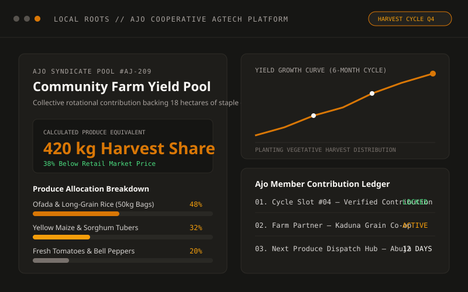
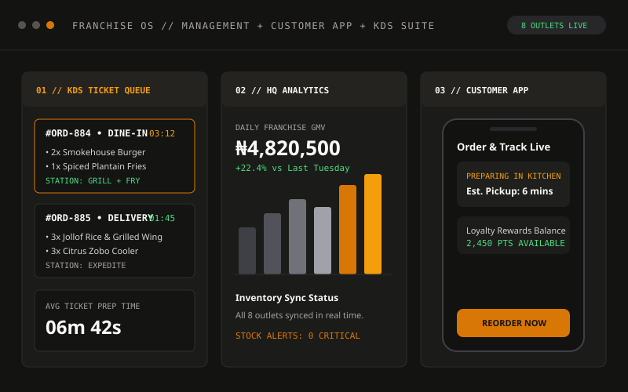

User-Centered Product Design
Translating business and operational requirements into intuitive user journeys, scalable design systems, and interactive Figma prototypes validated with real stakeholders.
- Figma
- Design Systems
- Adobe Illustrator
- Framer
Welcome to my personal academic workspace and digital product portfolio.
I am a Product Engineer and undergraduate B.Sc Cybersecurity student at MIVA Open University based in F.C.T Abuja, Nigeria. My work spans product strategy, user-centered UI/UX design, frontend and mobile engineering, and secure digital systems execution—transforming complex ideas into resilient, market-ready software products.
Translating business and operational requirements into intuitive user journeys, scalable design systems, and interactive Figma prototypes validated with real stakeholders.
Building responsive, accessible web and mobile applications using semantic HTML5, modern CSS architecture, TypeScript, React, Next.js, Dart, and PostgreSQL.
Pursuing a B.Sc in Cybersecurity at MIVA Open University while applying network defense, Linux/SQL security, and automated Python risk management to digital products.

A subscription-based repair and maintenance platform giving users access to vetted artisans and professionals on a "no extra labor cost" basis.

A platform utilizing the Yoruba "Ajo" culture of rotational contribution to deliver calculated produce yields, lowering food costs and bridging entry into farming.

An all-in-one operating software suite for restaurant chains featuring a management dashboard, customer ordering app, and Kitchen Display System (KDS).
Manage coursework deliverables across CSC 106, COS 102, COS 111, MATH 102, PHY 108, PHY 102, GST 112, and GST 122 with persistent browser storage.